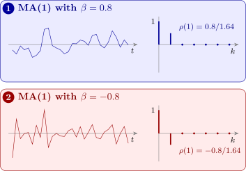

6.2 The first-order moving average
The simplest case is the MA(1) process \(X_t = Z_t + \beta Z_{t-1}\), for which Theorem 6.1.2 gives \(\gamma (0) = (1 + \beta ^2)\sigma _Z^2\), \(\gamma (1) = \beta \sigma _Z^2\), and \[ \rho (k) = \begin {cases} 1 , & k = 0 , \\ \dfrac {\beta }{1 + \beta ^2} , & k = \pm 1 , \\ 0 , & |k| \ge 2 . \end {cases} \] With \(\beta > 0\) neighbouring values tend to be alike; with \(\beta < 0\) they tend to alternate (Figure 5).
- (i)
- For the MA(1) process, \(|\rho (1)| \le \frac 12\), with equality only when \(\beta = \pm 1\).
- (ii)
- Conversely, a function with \(\rho (0) = 1\), \(\rho (\pm 1) = r\) and \(\rho (k) = 0\) for \(|k| \ge 2\) is the ac.f. of a stationary process if and only if \(|r| \le \frac 12\).
Proof. (i) \(1 + \beta ^2 - 2|\beta | = (1 - |\beta |)^2 \ge 0\), so \(|\beta | \le \frac 12(1 + \beta ^2)\) and \(|\rho (1)| = |\beta |/(1 + \beta ^2) \le \frac 12\), with equality exactly when \(|\beta | = 1\).
(ii) If \(|r| \le \frac 12\) and \(r \ne 0\), the equation \(\beta /(1 + \beta ^2) = r\), that is \(r\beta ^2 - \beta + r = 0\), has the real root \(\beta = (1 - \sqrt {1 - 4r^2})/(2r)\), since \(1 - 4r^2 \ge 0\); the MA(1) process with this \(\beta \) has the required ac.f. (For \(r = 0\), take white noise.) Conversely, suppose the function is an ac.f. By Theorem 3.3.1(iv), for any \(n\) and weights \(a_1, \dots , a_n\), \[ 0 \le \sum _i\sum _ja_ia_j\rho (i - j) = \sum _ia_i^2 + 2r\sum _{i=1}^{n-1}a_ia_{i+1} . \] Taking \(a_i = (-1)^i\) gives \(0 \le n - 2r(n - 1)\), so \(r \le \frac {n}{2(n - 1)}\) for every \(n\), and letting \(n \to \infty \), \(r \le \frac 12\). Taking all \(a_i = 1\) gives \(0 \le n + 2r(n - 1)\), and in the same way \(r \ge -\frac 12\). □
So no MA(1) process, and indeed no process whose correlations stop after lag 1, can have a lag-one autocorrelation above \(\frac 12\) in size. This explains Example 3.3.2 and Problem 5.2.4: there \(\rho (1) = 0.8\) and \(0.6\), both too large.

Example 6.2.2. A stationary series appears to follow an MA(1) model, and its sample lag-one autocorrelation is \(r_1 = 0.4\). Estimate \(\beta \) by equating \(\rho (1)\) to \(r_1\).
Solution. Solve \(\beta /(1 + \beta ^2) = 0.4\), that is \(0.4\beta ^2 - \beta + 0.4 = 0\): \[ \beta = \frac {1 \pm \sqrt {1 - 4(0.16)}}{0.8} = \frac {1 \pm 0.6}{0.8} , \qquad \beta = 0.5 \ \text { or } \ \beta = 2 . \] Both values give \(\rho (1) = 0.4\): \(0.5/1.25 = 0.4\) and \(2/5 = 0.4\). The data cannot distinguish them, because the two models have exactly the same ac.f. The next section explains which one to choose: \(\hat \beta = 0.5\).
Questions on this section
Stuck on something here? Ask below and it stays attached to this topic.